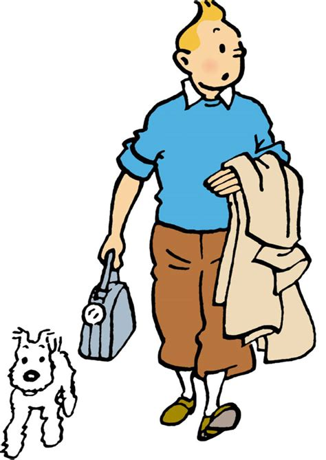
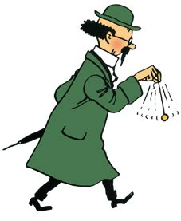

Characters
- Tintin is the main character of the comics. The stories follow him and his dog Snowy doing research for his reporting and
later exploration work. This often gets him into dangerous situations, but he is always able to get out unharmed and thwart whatever nefarious
plot the bad guys have. He is somewhat boyish but doesn't have much personality beyond that.

- Captain Haddock is a ship captain. Over time, he goes from being an alcholic wreck to the heroic best friend of Tintin. His dry
humour and realism counterweights Tintin's boyishly optimistic nature.

- Professor Calculus is a physicist known for his hearing problems and absent-mindedness.

Return to the home page.